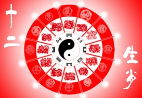

生肖，也称属相，是中国乃至于东亚一些地区用来代表年份和人的出生年的十二种动物，包括鼠、牛、虎、兔、龙、蛇、马、羊、猴、鸡、狗、猪。生肖的周期为12年，每一人在其出生年都有一种动物作为生肖。
中国古时的术数家拿十二种动物来配十二地支，即十二属相，又称十二生肖。肖者相似也，即你的出生命运与该动物有某种相似。十二生肖不仅代表年份的十二循环，也表示一天12个时辰的更替。
十二生肖顺序：生肖次序与地支次序一致，依次为： 子鼠、丑牛、寅虎、卯兔、辰龙、巳蛇、午马、未羊、申猴、酉鸡、戌狗、亥猪。离开十二地支，纯粹讨论十二生肖顺序毫无意义。
2019生肖运势，根据古代命理测算您的生肖运势，包括生肖总运、流年运势、命理、性格、事业、感情、财运等。